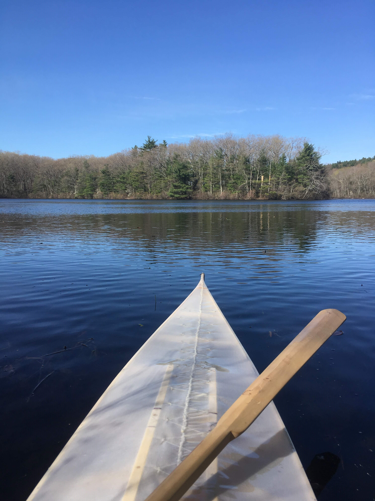

Intro
I’ve been thinking about building a skin on frame kayak ever since I saw someone paddling one in the summer of 2016. At the time I was living on Compton Island near Johnstone Strait (this is where I built my bread oven). I was out paddling a plastic kayak one day with the camp’s guide Sam, when another group of kayakers passed us led by somebody in a skinboat. I fell in love with the boats then.
Skin on frame boats sit beautifully in the water. They’re typically designed to ride low to the surface because the reduced windage is helpful for keeping course in a rough sea. Skin on frame is also usually a more lightweight construction than a plastic boat, and although the narrow beam takes some time to learn how to balance in, they’re great for rolling. When I got home from BC I ordered The Greenland Kayak: A Manual for its Construction and Use by Cristopher Cunningham. This book describes how to build a kayak made of readily available lumber fit to the dimensions of your body and true to traditional kayak designs found in Greenland (with some modern, seal-friendly adaptations). Over the next three years I kept reading and rereading the book every few months, wondering if I would ever have the time and space needed to build it. After graduating from McGill in December 2018 I moved back home to Worcester MA to look for a job. This would be my chance.
I spent the next 4 months working on the boat for a few hours each day and I’m happy to say that I was able to launch it on May 4 2019. I’m so thankful for the time I got to spend on this boat and for my family and loved ones who believed I could do it.
Lumber and Preparation
There are two main types of lumber I used to make this boat, construction grade SPF (spruce, pine, fir) and bending stock. The construction lumber makes up the gunwales, chines, keelson, bow and stem, and the deck beams. The plans in the book call for a total length of 3 armspans minus 18 inches which for me works out to abut 17 feet. I had a hard time finding boards over 16’ but eventually found a lumber yard willing to sell me an 18’ 2x10. I drove out to select the board I wanted because the gunwales are the main structural element of the boat and I couldn’t accept any knots, and they delivered the board. The rest of the SPF lumber didn’t need to be so long so I was able to buy it at local lumber yards by picking through the 2x and 1x stock for clear boards.
Bending stock can be tricky to find. The ribs and coaming need to be steam bent so you need to find oak (or a select few other species like ash) that hasn’t been kiln-dried so the lignin in the wood is still intact. Some people will tell you that under the right conditions you can steam bend kiln-dried lumber and I don’t doubt it, but as a first try in steam bending I didn’t want to risk any extra variables. After some calling around I got in contact with a local arborist who mills lumber on the side and bought a straight clear 10’ 2x12 board of red oak that had just been milled the previous fall. This is where I made a mistake that I may be paying for in a few years. The board I bought is red oak rather than white. White oak is used in boat building because of its fantastic rot resistance easy steam bending. Red oak on the other hand has such low rot resistance its classified as a perishable lumber. I was able to steam bend the strips I got from this board (not without frustration) but I think I would have been better off with white oak. I worry that eventually the water exposure will cause the ribs to rot away.
Before I could start building the boat I needed some sawhorses to build it on. I used Mathias Wandel’s design. After finishing the sawhorses I carried my table saw up the stairs and out to the driveway. With my dad on the other end of the board, we milled the 18 foot longitudinals.

The Deck
One challenge of this project is how frontloaded the more tedious parts of the build are. The first part to make is the two gunwales which need 11 deck beam mortises and 23 rib mortises each for a total of 68 hand cut mortises. I spent the better part of a month cutting mortises before I could get something that even closely resembled a boat. I got pretty handy with a chisel (and with sharpening a chisel) in that time and it served me well for the rest of the project. The rib mortises are rectangular blind holes on the bottom surface of the gunwale to accommodate the end of a rib. I cut them using a ¼” chisel and the Paul Sellers method and checked them using a gauge block I later used to mill the ribs. To mark the position of the mortise holes more easily I 3D printed a gauge shown in the viedo below. The arm is adjustable in order to find the center of the board.
The deck beam mortises are a little trickier because they need to go into the gunwales at a 17 degree angle to accommodate the 73 degree angle the gunwales will sit at. Tilting the gunwales out like this is what gives the boat its sheer. Cutting the mortises at an angle to accommodate ensures the deck beam tenons can be horizontal. To establish the angle and remove most of the material I made an angled drill guide. The top of the guide references the top of the gunwale and the two wings on the side line up with the edges marked for the gunwale. The gauge can be flipped to use as a marker for the outline of the mortise. After drilling three holes with a brad-point bit the rest of the material is easy to remove with a chisel. The final step is to test the fit with a gauge.
Marking the outside of the mortise
Aligning the wing of the jig with the mortise line
3 holes drilled at 73 degrees
Checking the cleaned mortise
After the gunwales had all their mortise holes marked out and cut I could finally bend them into boat shape for the first time. The initial shape of the gunwales was set by five forms. The center form spreads the gunwales out to the maximum beam of the boat right where I sit and the two end forms pinch the ends together. To get a little more room in the center of the cockpit and to put a nice backward bend in the gunwales two spreader forms push the gunwales apart in between the center and end forms. These forms are temporary and their work would eventually be done by the deck beams. Once I put the gunwales in their forms I realized how twisted they wanted to be, not good for a boat unless you plan on taking it in circles. This was one of the big roadblocks in the project that made me worry. I was careful to match the grain when I initially milled the lumber and I checked the two pieces for stiffness when I decided which side would face in. It’s such a long board I think some variation is inevitable. I spent a lot of time thinking about the structure of the boat and how there really aren’t any diagonal members that could take this twist out. I measured the twist and left the gunwales in their forms with clamps twisting them in the opposite direction for a few nights and this took about half of the twist out. The rest of the twist came out as I added more structure.
With the gunwales held in their final shape I could finally mark the deck beams and their tenons. The tenon on the deck beam was a little tricky to lay out because it needs to but up against the smooth curve of the gunwale. The only way to lay the tenon out is to clamp the deck beam blank to the gunwale and pull measurements from the mortise location. I made this process a little more efficient with, you guessed it, a 3-D printed marking gauge. The picture below shows the complicated shape of the tenon and each tenon was unique, but once they were laid out it was just a matter of cutting to the lines with a handsaw and finishing the fit with a chisel.
The deck beams intimidated me at first and I almost considered doweling them instead but in the end they were pretty fun! The deck beams are held in place with a dowel through the tenon and gunwale and every other beam is lashed to the gunwales with artificial sinew. The lashing construction method can pull a suprising ammount of tension into the joints and I’m confident in the strength. The key to designing a good lashing is mechanical advantage. First, run several loops through each member in the direction you want the tension of the joint to pull, and pull the loops tight. Next, tie knots around the loops that pull them closer together, these knots get the tension in the joint way higher than you’d ever be able to pull. Think about how hard it is to pull a rope taught and horizontal, now think about how much harder it is to pull that rope perfectly horizontal with a weight on the center (it’s actually impossible to pull it to an angle of zero, do the free body diagram and it the tension in the rope works out to mg/(sin x) so as the angle of the rope, x, approaches zero the tension approaches infinity). That’s the type of mechanical advantage this type of knot produces.
With all the deck beams in place I could take out the forms for the last time and lash the ends of the gunwales together around the deck beams permanently. The deck was done and it almost looked like a boat.
The Hull
Without a doubt steam bending was the hardest and most frustrating part of this project. There were times I thought I’d end up with just a deck and a story of the time I thought I could build a boat. The first picture below is 23 rib blanks carefully measured and laid out, eagerly waiting to be steam bent to shape. Of the 23 ribs I made in the first round only one made it to the final boat. All the others snapped, a 4% success rate. I did four rounds of steam bending improving the success rate each time and I’ll talk a little about how I did that.
The first thread I followed was steam time which I suspected was too short. My mom, who has experience steam bending oak baskets, agreed that the ribs didn’t seem to be flexible enough to bend. I made the steam box out of foil-backed foam insulation and fed steam to the back through a plastic pipe connected to a kettle and hot plate. The hot plate had a nameplate power of 1 kW which seemed low to me considering the size of the box and how leaky the whole system was. In my first round of steam bending I was cautious not to steam for more than 15 minutes because the resources online said too much steam could increase the risk of cracking. With two clues pointing to more steam I decided to do a test and made several coupons of the rib material. I started them in the steam box at the same time and took one out to bend every 4 minutes. I didn’t find a point where additional steam made the wood more brittle. Up to 30 minutes the wood seemed to get more and more flexible until additional steam didn’t seem to have an effect. This change increased the success rate to about 20%.
The next thing to consider was the grain direction of the wood. I read that good bending stock has grain that doesn’t run out of the board in the direction of the bend in less than 10 inches. When I initially milled the rib stock I saw that the grain in the board direction was fairly straight and just milled the strips. After examining the broken ribs I found breaks along grain lines that ran out of the board in about two inches. This was when I realized that the board I bought had really good grain runout in one direction and really short runout in the other. Honestly red oak has so many lines in different directions it’s hard to tell which are the lines that actually define separate annual rings that the wood is likely to split along. Fortunately I had some of the original board left over and milled more rib stock (I had snapped everything else) 90 degress to the original milling direction. This change combined with getting some practice and knowing what the wood feels like when it’s about to give and when to back off increased the success rate to about 80%. I finished the rest of the ribs without any wood to spare.
23 ribs, ready to bend
50 ribs, snapped
Timelapse of the day I finally got the hang of bending ribs
Finishing the ribs was a huge milestone. I could finally see the shape of the boat, and I knew the rest of the woodworking was relatively easy. What remained was the three longitudinals on the bottom, the bow and stem blocks, the masik, and the cockpit coaming. The bow and stern blocks are two 1” stock pieves that give the shape to the front and back of the boat. They are lashed to the gunwales and doweled to the keelson, the longitudinal that runs along the bottom center of the hull. Along with the keelson there are two chines on the bottom. All three members are lashed to each rib with a running lashing, securing the structure of the hull. This all was done in about a week, the only tricky parts was making fairing wedges to stick between the chines and ill-behaved ribs.
Skipping some small parts, the last two things I want to talk about here are the masik and the cockpit hoop. The masik is a highly curved deck beam that the cockpit hoop rests on and serves as a thigh brace while paddling. The piece is so curved that if you made it from straight grained SPF it would be likely to split. The book described three options: make it out of straight-grained hardwood like maple or ash, make a curved laminate, or use a curved piece of wood. I decided to try option 3 because I found a log in the woods that seemed to have just the right curve and I had never started from a log before. Without a jointer, planer, or bandsaw, getting the log to the right shape took some effort. I started by cross-cutting to roughly the depth I needed on each side and chiseling out in between the cross cuts. Next I roughly planed each side flat and cut the profile of the masik. The rest of the work was done with a handplane and spokeshave. By working slowly and checking often I was able to get the masik to a pretty even shape and the grain runs continuously from end to end of the curve. Because of the continuous grain I’m confident that it’s a very strong part.
The last piece of woodworking was the cockpit hoop and coaming. This is the oval part that you sit in and the edge of the skin attaches to. The cockpit hoop is a 1 inch wide red oak oval that I steam bent around a form. The coaming is a 3/8 by 3/8 lip of red oak that I steam bent around the finished hoop. The lip is for securing a spray skirt. After using all my extra bending stock on the ribs I only had 3 chances to get the coaming right, and I used all three. The first two pieces snapped and I would have snapped the third if it weren’t for the help of Cape Falcon Kayak The best advice I got from Brian Shulz’s video is that the last step before pulling a piece out of the steam box is to take a deep breath. You only have a few seconds to bend the wood before it cools down and if you spend those seconds nervous you’ll put your nervous energy into the wood and it will snap. Steam bending feels right when you’re gradually yielding the wood and if it ever feels wrong you need to stop immediately. After steam bending both loops I lashed them together as shown in the pictures. Something about the look of the lashing along the steam-bent wood says boat building to me and I really liked to see this part come together.

And with that the woodworking was done! I put a few coats of tung oil on everything and moved on to the paddle and skin.
The Paddle
Making the paddle was a great way to finish this project. It was much more of a carving project than the joinery and steam bending of the hull. I made the paddle out of one 8 foot 2x6 Alaskan yellow cedar board. I did some plunge cuts on the table saw to cut away the material where the shaft is and the rest I did with a plane and spokeshave. It’s not as even as I would like it, but I really like the feeling of paddling something I know I carved out of one piece of wood. I sanded it up to 800 grit because thse tight grained cedar can take a really high sanding and I finished it with linseed oil.
The Skin
After all the woodworking was finished and the frame was oiled I could finally skin the boat. I bought some ballistic nylon from skinboats.org and it came with a 2 part urethane coating. This is the part that would be made of 3 or 4 seal skins if this were a real Greenland boat. After cutting the nylon to size with a chisel-tipped soldering iron to fuse the cut edge, you’re ready to start sewing. The key is to get the skin as tight as possible around the frame. To get the skin tight longitudinally you sew one pocket into the bow end then go mark on the fabric where the stern is. Then you go back to the bow and unhook the pocket you just sewed and sew the pocket for the stern about 3 inches too short. Then it’s a matter of laying on the ground and putting your feet up on the last deck beam and giving the skin a really good pull to get both pockets around the bow and stern. Next you have to sew the seam up the deck and you do this with two stages of sewing to get it really tight. You can see the two stages in the picture below. The zig-zag is #9 nylon twine that you sew back and forth along the skin and do several rounds of pulling it as tight as you can get it. Once the skin is tensioned you can sew the basting stitch along the seam with a curved needle and unwaxed dental floss. The seams on the bow and stern end at the coaming where you sew the last edge onto the cockpit coaming with nylon twine. The finished skin is beautiful and does a great job of showing the shape of the boat while hiding any woodworking sins.
Zig-zag stitch to tighten the skin
Partially finished seam
Tigthened skinn from the bottom
Cockpit hoop attached
After the skin is on you can get a little more tension on the deck using a steam iron. Next is the plastic coating. The urethane is pretty easy to apply except it gets on everything. It’s this awful mix of extremely sticky and low surface tension that drips all over the place and always wraps around the lip of what you’re pouring it from. The picture below shows half of the boat coated. It’s pretty amazing how transparent the coating makes the nylon and it has a cool effect where you can see the waterline from the inside of the boat.
And that’s it! The boat’s done!
Maiden Voyage
I have no doubt that the joy of launching a boat you built yourself outweighs all the pain of building it. The first trip was May 4th 2019 and my parents and friends came out to drink champagne and see me paddle for the first time. My first attempt at getting in the boat didn’t go quite as planned, thankfully everybody was watching as I immediately dunked myself into the water. The second try! I did make it into the boat. And it floated, and I paddled away.
Conclusion
What a great project, and this won’t be the last boat I build. On the water the kayak is low and quiet and on a calm lake you can really get it going. Faster than any plastic boat I’ve ever paddled, or maybe it just feels that way. The flat bottom and the length combine to let you paddle it into shallow marshes, and you can carry it over one shoulder and walk it down to the water. There are certainly some things I would change. It’s not very comfortable to sit in because of the placement of the deck beams and if I had a better vision of the final product I could have planned those locations better. I would also like a deck with a little more room for cargo so I could go camping in it. The 17 feet of length make it fast but I would prefer a shorter, more maneuverable boat. And although the skin covered most of my mistakes, I know the joinery will be much cleaner on my next kayak, whenever that is. I’m so thankful to have had the time to build this boat and I'm proud to have finished it. I enjoyed being able to take an engineering and project management approach to parts of it, and an artistic approach to others. If you ever find yourself with enough time to build a boat like this I absolutely recommend it and I’d love to hear about it.
Resources
I have a complicated relationship with Building the Greenland Kayak: A Manual for its Construction and Use. From my understanding it’s one of the first books of its kind and I give it credit for the role it had in developing the modern skin-on-frame community. It’s also worth noting that I actually was able to build a working kayak from the text, but that’s where the positive things I have to say about it end. The text is provided without any drawings or plans, just faded black-and-white photos. If the author wanted to write a book describing how to build a boat without the aid of any drawings you’d expect some kind of system of explicit coordinates. So often I’d spend an afternoon flipping from page to page trying to decipher ambiguous words like ‘above’, ‘inside’, or ‘in line with’ and more than once it led me to make mistakes. The book also describes jigs for certain tasks like cutting leather for deck lines or drilling holes in the gunwales that I could never get to work. That’s why I relied so heavily on 3D printed jigs of my own design. If you’re seriously interested in building your own skin-on-frame boat I recommend purchasing one of Brian Schulz’ plans at Cape Falcon Kayaks. His detailed videos describe every step of the process and he even sells some of the harder to source components at cost. More than once the videos he’s uploaded to youtube for free saved me from mistakes that Cunningham’s book led me to. In the future I plan on building his F-1 design.
More Photos
